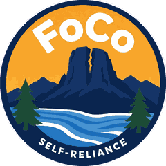

Larimer County · free · no sign-in
Self-Reliance FoCo
A phone directory of food, jobs, housing, and clothing help for Fort Collins and nearby towns — so desks can stop reprinting paper lists.
Self-Reliance FoCo is a free app that puts 218 listings in one place. Search by town, tap to call, and open a map. There is no account, no ads, and no tracking. The source is public on GitHub so anyone can keep it going.
What’s in the app
Why scan this instead of a sheet
- Paper lists go stale. The app is one download away from an updated list.
- Covers Fort Collins, Loveland, Estes Park, Berthoud, and Wellington.
- Works offline after install. Tap a number to call.
- MIT licensed. If the original maintainer steps away, someone else can fork it.
Scan to get it on a phone
Download the app
Opens the latest APK from GitHub Releases. After download, Android will ask you to allow installing from your browser. That is expected — this app is not on the Play Store.
Direct links if a scanner is not handy: Android APK — github.com/TheMilkmanJ/SelfReliance-FoCo/releases/latest/download/Self-Reliance-FoCo.apk · Project — github.com/TheMilkmanJ/SelfReliance-FoCo